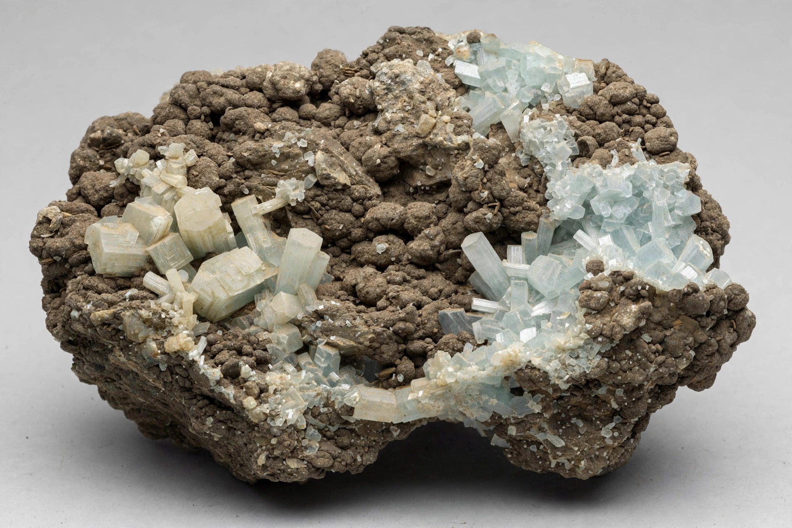

| Formula | PO43− |
|---|---|
| Structure | Tetrahedral |
| Conjugate acid | Phosphoric acid (H3PO4) |
A phosphate is a salt or ester of phosphoric acid, built around the phosphate ion PO43− — a phosphorus atom bound tetrahedrally to four oxygen atoms. Phosphates are of enormous importance in chemistry, biology and industry: they form the structural backbone of DNA and RNA, the energy currency ATP, and much of the mineral of bones and teeth.
Phosphorus occurs in nature almost entirely as phosphate in minerals such as apatite and in sedimentary phosphate rock (phosphorite). The great majority of mined phosphate — over 200 million tonnes of rock per year in recent decades — is converted into fertilisers, principally via phosphoric acid; major producers include China, Morocco (which holds the largest reserves, including in Western Sahara), the United States and Russia.
In the body, phosphate is essential for bones (as hydroxyapatite, Ca10(PO4)6(OH)2), cell membranes (phospholipids), energy transfer (ATP and creatine phosphate) and buffering of blood pH. Blood phosphate is regulated by parathyroid hormone, vitamin D and the hormone FGF23; both abnormally high (hyperphosphataemia, common in kidney failure) and low (hypophosphataemia) levels cause disease. In the environment, excess phosphate run-off from fertilisers and detergents drives eutrophication of lakes and coastal waters, stimulating algal blooms and oxygen depletion.